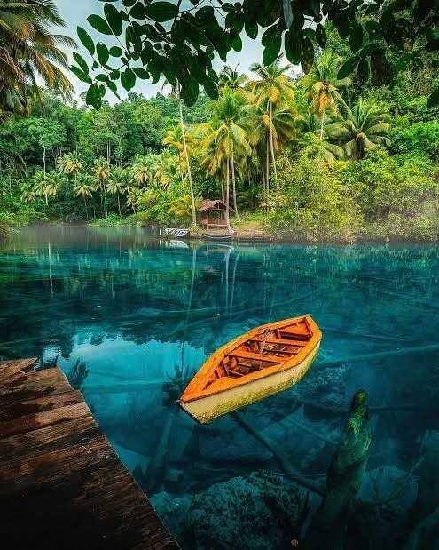
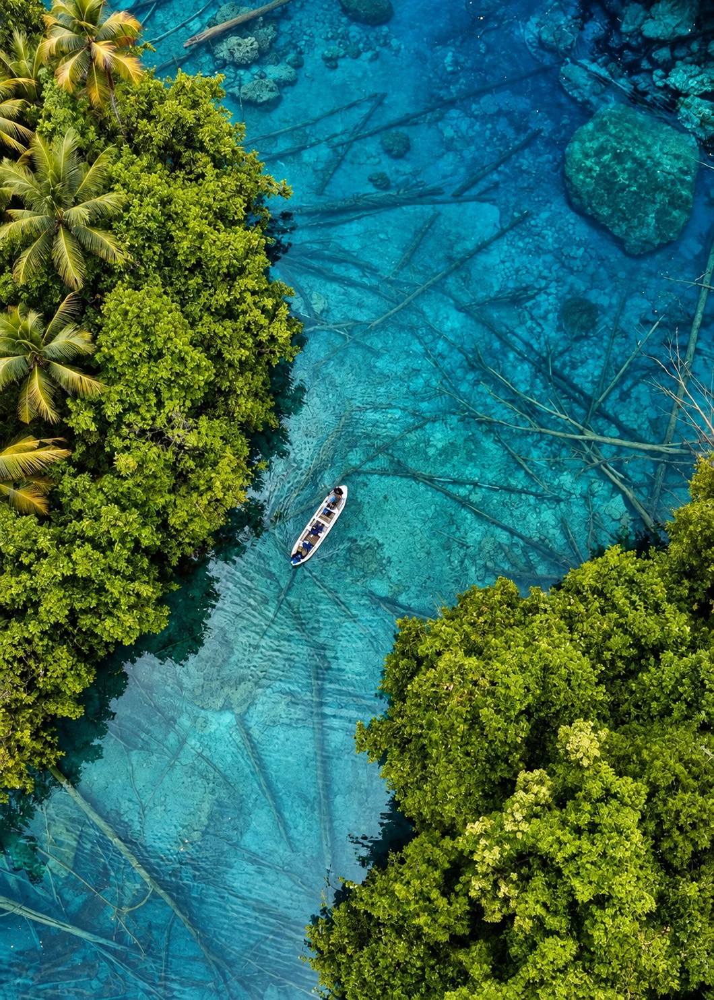
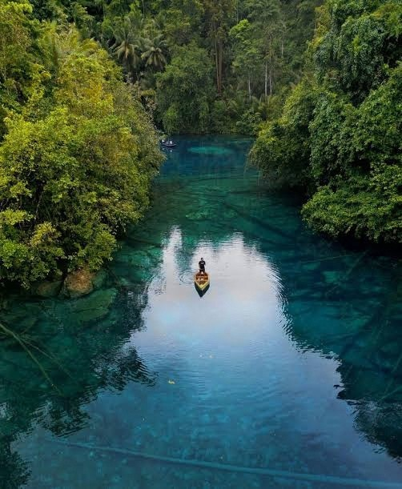
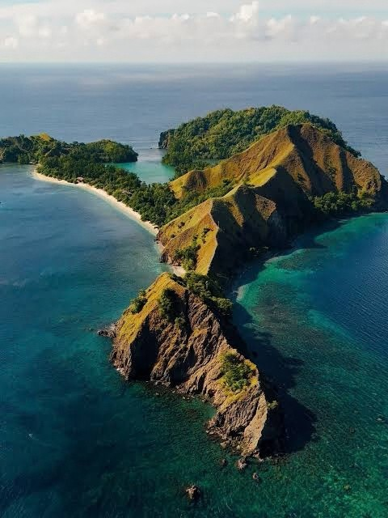
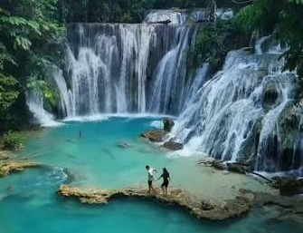
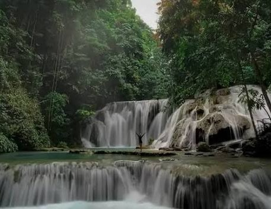

Paisupok
Crystal-clear water hidden in the green of Banggai. A place to swim, explore and slow right down.


Collection · Nature · Central Sulawesi
Where the Wild
Meets the Blue
Tempat alam liar bertemu birunya laut.
Why Luwuk, Banggai · Mengapa Luwuk, Banggai
Ruang untuk menikmati alam.
On the eastern arm of Central Sulawesi, Banggai is still a quiet secret: clear lakes under a canopy of green, islands rising out of deep blue water, and waterfalls hidden in the forest.
Four days to see the best of it at an easy pace. A speedboat to Paisupok, a lake so clear the boats seem to float. A trek to the top of Pulo Dua. Three waterfalls, from Piala and Laumarang to Kamumu. Every evening back to a comfortable room at Santika Luwuk.
Clear water. Wild islands. Good stories.
Di lengan timur Sulawesi Tengah, Banggai masih menjadi rahasia: danau sebening kaca, pulau-pulau di tengah laut biru, dan air terjun di dalam hutan. Empat hari untuk menikmatinya dengan santai.

The package · Paket perjalanan
Piala · Laumarang · Paisupok · Pulo Dua · Kamumu
Per person · Per orang
IDR 21,950,000
Return flights, three nights at Santika Luwuk, every meal, the boats, a private car and a private local guide, in one clear price.Tiket pesawat pulang-pergi, tiga malam di Santika Luwuk, semua makan, kapal, mobil pribadi, dan pemandu lokal dalam satu harga.
Highlights · Sorotan

Crystal-clear water hidden in the green of Banggai. A place to swim, explore and slow right down.

Green hills meet deep blue sea. Trek to the viewpoint for the whole panorama from above.

Waterfalls tucked into tropical forest, on the wild side of Sulawesi.

One more glimpse of Banggai’s nature before you fly home.
Day by day · Rencana harian
Every night at Santika Luwuk, with meals noted under each day.
Luwuk Airport · Piala Waterfall · Laumarang Waterfall · Santika Luwuk
Our local team meets you at Luwuk Airport and takes you straight into the forest: Piala Waterfall first, then Laumarang. Check in at Santika Luwuk in the afternoon, then dinner.
Disambut tim lokal di Bandara Luwuk, lalu menuju Air Terjun Piala dan Laumarang. Check-in di Santika Luwuk dan makan malam.
Harbour · Paisupok · Paisubatango · Pantai Poganda
A speedboat from the harbour to Paisupok, the lake so clear the boats seem to float on air. Swim and explore Paisubatango, lunch and slow beach time at Pantai Poganda, then back to Luwuk.
Speedboat menuju Paisupok yang airnya sebening kaca, berenang di Paisubatango, makan siang dan bersantai di Pantai Poganda, lalu kembali ke Luwuk.
Harbour · Pulo Dua · Luwuk
By boat to Pulo Dua. Trek up to the viewpoint for the panorama of green hills and deep blue water, then come down to snorkel. Lunch on the island and sail back to Luwuk.
Naik kapal ke Pulo Dua, trekking ke puncak untuk melihat panorama pulau dan laut, lalu snorkeling. Makan siang dan kembali berlayar ke Luwuk.
Santika Luwuk · Kamumu Waterfall · Luwuk Airport
Breakfast and check-out, then one last waterfall at Kamumu before the transfer to Luwuk Airport.
Sarapan dan check-out, mampir ke Air Terjun Kamumu, lalu diantar ke Bandara Luwuk.
What’s included · Termasuk dalam paket
From the airport on day one to the airport on day four: the flights, the boats, the car and the guide are arranged.
Getting there · Perjalanan
Staying & eating · Menginap & makan
On the water · Di laut
Documentation · Dokumentasi
Not included · Tidak termasuk
Personal expenses · Meals and drinks outside the package · Tips for guide and crew · Anything not listed as included

Get in touch · Hubungi kami
Yuk, rencanakan perjalananmu.
PT Vakansi Media Global · Licensed travel agency · Jakarta Selatan